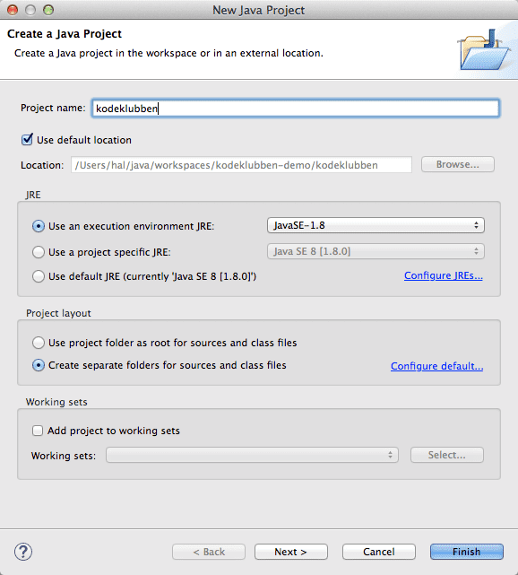
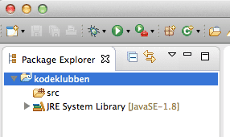
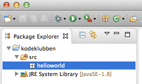

Formålet til denne leksjonen er å lære hvordan man får satt opp et Java-prosjekt i Eclipse og kjørt et JavaFX-program. I tillegg skal du lære litt om sammenhengen mellom JavaFX-koden og innholdet i app-vindeuet en får opp.
Steg 1: Sette opp Java-prosjekt, og lage app-mappe og app-klasse
Eclipse strukturerer koden i såkalt prosjekter. Vanligvis har en ett Java-prosjekt for hver app en lager, men hvis en for det meste lager små app-er, så er det greit å samle dem i ett Java-prosjekt. Da blir det mindre arbeid med oppsett.
Et prosjekt er enkelt sagt en mappe med innhold/oppsett tilpasset typen app en skal lage. Først og fremst handler det om å velge programmeringsspråk, så når du skal lage en ny app med JavaFX, så må du lage et Java-prosjekt. Du vil da få en mappe med flere under-mapper, og en av disse heter src og vil inneholde all koden din. For at de ikke skal bli for uoversiktlig, spesielt hvis du har flere app-er i samme prosjekt, så bør du så lage en Java-mappe for app-en din. Når det er gjort så kan lage Java-filen for app-en din!
Sjekkliste
Lag et nytt Java-prosjekt ved å velge File > New > Java Project (altså New > Java Project fra File-menyen). Du vil da få opp et skjema hvor du bl.a. kan fylle inn navnet på prosjektet. Skriv kodeklubben eller et annet passende navn. Merk at du bør holde deg til de engelske bokstavene a-z og A-Z, ellers får du lett problemer siden. De andre innstillingene lar du være.

I Package Explorer-panelet vil du se at det dukker opp en mappe med navnet du valgte. Inne mappa vil du ha en src-mappe og en mappe som heter JRE System Library [JavaSE-1.8]. src-mappe er der du legger koden din, mens JRE System Library [JavaSE-1.8] viser at prosjektet er satt for å bruke Java 8, som vi trenger for å bruke JavaFX. Skjermutklippet under viser omtrent hvordan det vil bli seende ut.

Lag en ny Java-mappe for app-en i denne leksjonen. Java kaller slike mapper for pakker, men du kan tenke på dem som mapper. Pass først på at du har valgt (klikket på) riktig Java-prosjekt i Package Exporer-panelet. Velg så File > New > Package eller ikonet som ser ut som en pakke med et pluss-tegn i hjørnet. Alternativt kan du høyre-klikke på src-mappa og velge New > Package.
Du vil da få opp et skjema hvor du kan skrive inn hvilken kode-mappe (Source Folder) som pakken skal puttes i og pakke-navnet. Kode-mappen skal være kodeklubben/src (eller prosjektnavnet du skrev inn tidligere etterfulgt av /src. Pakkenavn inneholder som regel bare små bokstaver, altså bokstaven a-z. Derfor kan du kalle mappa helloworld.
Skjermutklippet under viser omtrent hvordan det vil bli seende ut.

Lag en ny Java-klasse (Java-filer kalles klasser) ved å høyre-klikke på helloworld-pakka du nettopp lagde og velge New > Class.
Du vil da få opp et skjema hvor kode-mappa og pakken allerede er fylt inn, mens navnet (Name) må fylles inn. Klassenavn starter alltid med stor forbokstav, og hvert delord som navnet består av, begynner også med stor forbokstav. Så når vi nå skal lage en app vi kaller Hello World-app, så blir navnet klassenavnet HelloWorldApp.
Skjermutklippet under viser omtrent hvordan det vil bli seende ut.
Steg 2: Skrive og kjøre HelloWorldApp-klassen
En Hello World-app er ment å være den enkleste app-en en kan tenke seg som viser Hello World på skjermen. F.eks. slik som dette:
En slik app må inneholde følgende elementer:
Den må bygge på Application-klassen (i pakken javafx.application) ved at du skriver extends Application i klassedefinisjonen. Uten det, er klassen rett og slett ikke en app-klasse.
Den må inneholde en metode (Java-funksjoner kalles metoder) kalt start som lager og putter skjermbilde-elementene inn i app-vinduet (som den får som argument).
Den kan inneholde en init-metode som typisk brukes for å initialisere variabler i app-en. Koden under har ikke en slik metode.
Oppstartsfunksjonen main, som kjøres når klassen din startes som et program, må kalle launch-metoden med klassen din som argument. Når du kjører koden vil følgende skje:
App-en din vil bli laget. App-en vil være et HelloWorldApp-objekt, også kalt en instans av HelloWorldApp-klassen.
init-metoden vil bli kalt (hvis du har en, og det har ikke koden vår)
App-vinduet vil bli laget (automatisk av JavaFX, ikke av vår kode)
start-metoden blir kalt med app-vinduet som argument (det er derfor det står (Stage primaryStage) bak start-navnet)
Her er den nødvendige koden, med kommentarer:
// klassen ligger i pakken helloworld, og// det må stemme med package-deklarasjonenpackage helloworld;
// med en import-setning, så slipper en å skrive hele navnet på klassene vi bruker// vi har like godt en import-setning for hver av klassene vi brukerimport javafx.application.Application;
import javafx.scene.Scene;
import javafx.scene.layout.Pane;
import javafx.scene.text.Font;
import javafx.scene.text.Text;
import javafx.stage.Stage;
// bygg på Application-klassen med extends// det er det som gjør at vår klasse kan fungere som en JavaFX-apppublicclassHelloWorldAppextendsApplication{
// her er metoden som kalles med app-vinduet// den tar inn app-vinduet som argumentpublicvoidstart(Stage primaryStage){
// vi lager oss det grafiske tekst-objektet, av typen Text
Text helloWorldText = new Text("Hello world");
// så sier vi hvor i vindet den skal plasseres, x- og y-posisjon
helloWorldText.setLayoutX(10);
helloWorldText.setLayoutY(50);
// vi lager oss et font-objekt, av typen Font
Font font = Font.font("Arial", 36);
// og setter den som teksten font
helloWorldText.setFont(font);
// vi mnå også lage et panel, av typen Pane
Pane root = new Pane();
// vi setter ønsket størrelse, bredde og høyde
root.setPrefWidth(300);
root.setPrefHeight(200);
// og putter teksten inni
root.getChildren().add(helloWorldText);
// til slutt legges panelet inn i app-vinduet
primaryStage.setScene(new Scene(root));
// og vises frem
primaryStage.show();
}
// dette er den egentlig oppstartsmetodenpublicstaticvoidmain(String[] args){
// kall den innebygde funksjonen launch, med app-klassen vår som argument
launch(HelloWorldApp.class, args);
}
}
Sjekkliste
Skriv inn koden over, ved å kopiere og lime inn linjene i din egen HelloWorldApp.java-fil. Legg merke til at ulike ord får ulik farge. Innebygde Java-nøkkelord som package, class, extends og new blir lilla, variabler er brune, tekst-verdier er blå osv. Dette hjelper oss å skjønne hvordan Eclipse har forstått koden. Hvis mye av koden plutselig blir blå, så har vi kanskje glemt en " som avslutter en tekst-verdi.
Kjør koden ved å høyreklikke på fila eller i editoren og velge Run as > Java Application. Du skal da få opp følgende vindu:
Lek litt med koden over. Prøv f.eks. å endre verdiene som styrer teksten (new Text(...)), plassering (setLayoutX(...) og setLayoutY(...)), skriftstypen (Font.font(...)), og vindusstørrelsen (setPrefWidth(...) og setPrefHeight(...)):
Skriv inn en annen tekst, f.eks. navnet ditt.
Endre posisjonen slik at teksten kommer lenger ned og til høyre ved å øke layoutX- og layoutY-verdiene.
Finn en annen skriftstype du liker og se hva som skjer når du velger en kjempestor font. Hva må du endre for å unngå at toppen av teksten kuttes?
Velg en kjempestor font og skriv en laaaaang tekst. Øk vindusstørrelsen så hele teksten fortsatt vises.
Deklarer en variabel windowHeight med int windowHeight = ...; (bytt ut ... med et tall) og prøv å lage en formel som beregner y-posisjonen du setter med setLayoutX(...), slik at teksten havner pent i bunnen av vinduet.
Legg merke til at det er ulike måter å sette ulike verdier på:
Teksten settes direkte når en lager Text-objektet med new Text(...)
De fleste verdier settes med egen metoder som begynner med set
Skriftstypen settes også når den lages, men den lages med funksjonen (Font.font(...)) og ikke med new Font(...).
Steg 3: Bruke kode-kompletteringsfunksjonen i Eclipse
Eclipse inneholder mange nyttige funksjoner for å gjøre koding mer effektivt. Eclipse kjenner til alt Java har av muligheter, og kan både foreslå kode du kan skrive og rette enkle feil i koden.
Eclipse holder rede på hvilke navn (på variabler, klasser og pakker) som gjelder hvor og kan foreslå alternativer basert på hva du har skrevet inn. Lag en ny linje under der skriftstypen settes med setFont(...). Skriv inn begynnelsen på variablen for Text-objektet f.eks. hello. Så holder du nede ctrl-tasten og trykker mellomrom. Eclipse vil da vise en liste over alle navn som begynner med hello:
Her ser du at Eclipse foreslår et variabelnavn (helloWorldText), et pakkenavn (helloworld) og et klassenavn (HelloWorldApp). Hvis du velger helloWorldText, så legges denne teksten inn. Denne funksjonen kalles kode-komplettering (eng: code completion) og gjør det bl.a. greit å bruke lange navn på variabler, klasser og pakker.
Eclipse vet hvilke verdier du kan sette for ulike typer grafiske objekter og kan hjelpe deg å skrive (og lære) dem. Skriv et punktum (.) etter helloWorldText-navnet. Eclipse vil automatisk aktivere kode-kompletteringsfunksjonen og vise en liste over alle metodene til Text-objektet. Hvis du skriver inn setF så vil Eclipse begrense lista til metodene som begynner med nettopp setF:
Der finner du bl.a. setFill og setFont. fill og font kalles egenskaper (eng: properties) og i Java setter du slike egenskaper med metoder som har set foran egenskapsnavnet.
Argument-typen viser hva slags verdi du må gi inn. F.eks. tar setFill et argument av typen Paint (egentlig javafx.scene.paint.Paint). Velg setFill fra lista og skriv inn Color.BLUE. Igjen ser du at Eclipse foreslår navn tilsvarende det du har skrevet.
Kjør app-en din igjen, så ser du effekten av kallet til setFill-metoden.
Hva har du lært?
lage nye Java-prosjekter med New > Java Project
lage nye Java-pakker med New > Package
lage nye Java-klasser med New > Class
hva en klasse må ha av kode for å bli en app-klasse
kjøre app-klassen som en Java-applikasjone
hvordan plassere en tekst i et vindu
hvordan endre verdier for plassering, skriftstype, farge og vindusstørrelse
hvordan bruke kode-kompletteringsfunksjonen
I leksjonen FXML-logo vil du lære hvordan lage skjerminnhold med FXML og tegne med JavaFX Scene Builder.
Forbedre denne siden
Funnet en feil? Kunne noe vært bedre? Hvis ja, vennligst gi oss tilbakemelding ved å lage en sak på Github eller fiks feilen selv om du kan. Vi er takknemlige for enhver tilbakemelding!